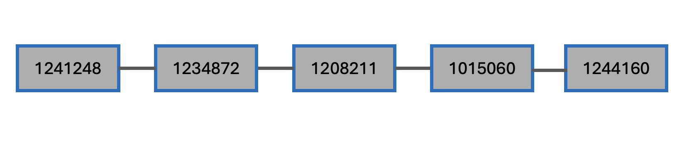

Week 12: Compiling the work that I have done so far for the poster creation
Overview
This I summarised the work that I has done for couple weeks
Summary
Understand eris codebase (week 04)
Eris is written on python with the mindset of portability and use few dependencies also has robust and easy to use API. Eris scan IS elements in the given sequence in fasta or gfa format in following steps:
- Eris scan pipeline, using minimap2 at core, will align IS elementt sequence from ISfinder database against the input sequence, and can accept contigs or full sequence
- The resulted alignment then sorted and culled to get high scoring query in that region, eris then will tag IS element as “mobile_element”
- Eris also will predict CDS using pyrodigal
- Eris search the promoters in the sequence using regular expression, then convert the sequence into feature graph to represent the correlartion CDS, IS element, and promoter
- We imolemented breadth first seach (BFS) to find the CDS that either part of the element (inside) or adjacent of the IS elements
- Eris reports the location of IS with resepct of each CDS (downsteam, upstream, flanking, and insdie), and based on that, it predict the raltive effect of the IS element to CDS feature
Run eris on the draft assembly of EC958 (week 05)
Downloaded the fastq of EC958 from SRR5194982, and assembled it using SPades, and appied it to
eris scanpipeline. I tried to give eris input of both contigs fasta and graph GFA. I also ranisescanto the same dataset for a little comparison.I also downloaded full chromosome of EC958 and the genebank file of EC958 with the IS annotations on it. I extract the IS element and convert it to bed file. These two files will be treated as the ground truth IS elements inside the isolate.
There are, originally, 41 IS elements inside EC958 chromosome (this will change). 12 IS annotated from EC958 plasmid sequence.
Eris found 139 IS elements from the GFA file and and 66 from the fasta file of SPades. More IS detected here because, the resulted assembly also consist of plasmid and the GFA file has more because it still has the overlap sequence so it might appear the redundant calling
Isescan also report more IS element form the resulted assembly, 58 and 77 from fasta and GFA, respectively.
Run eris on the “simmulated” draft assembly of EC958 (week 06)
Eris identified 58 (37 predicted IS intersect with truth IS) IS elements in the complete chromosome, also missed four IS elements:
- After inspection, we found:
- two of four missed IS are very short IS, and have relatively low identitity
- overcall results from Eris mostly because it called very short IS in the chromosome
- After inspection, we found:
Isescan detected 65 IS elements in the EC958 chromosome
I simulated illumina paired end fastq of EC958 chromosome using
art_illumina. We use this simulation reads so that the resulted assembly will consist of chromosome and also make sure this data come from single cell (clone), reduce the nose from different genetic composition.Using
shovill, bacterial genome assembler, I assembled the simulated reads.Eris detected 90 IS elements both from GFA and fasta files of simulated assembly
On the draft assembly result, one IS element can split into multiple contigs, and both eris and isescan detect that one IS element separately across the corresponding contig, making the count inflated

For instance this IS element: IS1397
Two copies of IS1397 are fragmented into six IS identifeid contigs, make the call double. We further confirm that node in the middle also consist of frgamented IS1397 element.
This fragmented IS also found in the mason simulated fastq, and also found in the real fastq assembly.
Reannotated the EC958 IS elements (week 07)
- From manual curration on the ISfinder website, we include MITEEc1, IS1397, IS100kyp, ISKox3, ISEch14, ISEc10, IS21 elements as true IS on the EC958
Collapse the IS graph (week 07)
By graph traversal logic, fragmented IS sequnces (nodes in the graph) can be collapsed and the IS copies can be quantified by their contig depths relative to the median depth
This approach will help eris find path of fragmented IS and collapse them into one path, also can make more accurate prediction on the how many IS copies in the given input draft assembly
For example:

Pyrodigal vs FragGeneScan (week 07)
- FragGeneScan metrics:
- Precision (How many predicted ORF are true): 0.897
- Sensitivity (How many true ORF are recovered): 0.99
- Pyrodigal metrics:
- Precision (How many predicted ORF are true): 0.992 = Sensitivity (How many true ORF are recovered): 0.961
FragGeneScanRs detected more ORFs than Pyrodgial. It is more sensitive than Pyrodgial, but has lower precision score.
minimap2 configuration for eris (week 08)
- minimap2 missed four IS using the default settings and setup to map IS elements against the genome sequence
- With other preset, minimap2 also failed to detect all IS in the genome
- However, we can detect all IS elements in the genome with the setup mapping the genome sequence to ISfinder sequence
- Heng Li approves this here
- With the help of copilot, we think that by use the ISfinder as the reference, minimap2 will index all list of IS elements and query sequence from the genome will be search against all the IS sequence, this will make sensitivity increased
Made improvement of EC958 IS annotation (week 09)
- Dimas has rewritten IS annotation of EC958, in a total of 49 IS elements identified in the chromosome sequence. For IS name with multiple copies, each copy is labeled with a suffix _1, _2, _3, and so on.
Tested the assemb ly result on pseudoR (week 09)
pseudoRgives different result of IS detection thanerisandisescan.- This tool requires the user to give the fastq reads and also reference genomoe. It will look where the moving insertion event happening throughout the genome
- Using real fastq and EC958 chromosome as the reference, it detected IS in the contigs where it was n ot detected by
erisandisescan.
Tested graph collapsing on the real dataset (week 10)
- It successfully find contigs path and correctly predict copy number for several IS elements, such as ISEc23, IS1F, ISSd1, and ISEc8, others are miscounted by 1 margin such as ISEc12, IS609, and ISEc9, others miscounted by big margin such as IS26 and IS15.
- Several contigs that have low coverage againts ISfinder sequences have very high depth, making it overestimated IS copies in total. Most of them are IS elements from the plasmid
Made comaprison of CDS and IS relationship from eris against the truth (week 11)
- The main goal is: to identify which CDS may be impacted by IS elements (as predicted by Eris from GFA) and to evaluate how similar these predictions are to the truth annotation, particularly in terms of the IS element locations relative to the chromosome sequence.
Using mapping approach - The CDS predicted by eris are extracted and mapped them to the chromosome sequence - From there we can assess how well eris (without complete sequence information) predict the IS element location relative to the CDS - All the exracted predicted CDS from gfa file were succesfully mapped to the reference sequence uniquely. - All those sequences intersect with at least small fraction with known/truth CDS (they mostly are actually CDS). This can confrom that most of CDS predicted by eris are correct. - Most of the time, eris correctly predicted the CDS are inside the IS - Most of the time, eris incorrectly predicted between downstream and upstream, confised between two - Most of the time eris correctly predicted the corresponding IS for each predicted CDS
using clustering approach
- The extract CDS sequences from predicted eris combined with all truht CDS sequences are ran to the mmseq2 clustering
- 55 cluster consited of both source of CDS sequences, and 118 cluster that consist only the CDS from eris.
- So it means that, 55 CDS are indded correct CDS based on the ground truth from the annotation